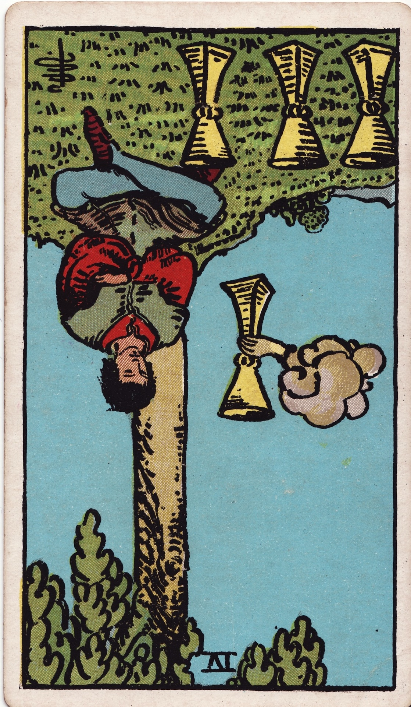

Four of Cups (Reversed)

Luck: A subtle shift toward openness. New possibilities or small opportunities may become noticeable again.
Mood: Gradually more receptive and willing to engage, moving out of previous indifference or stagnation.
Possible Event: I might decide to try something I had been ignoring or putting off, taking a small step toward change.
Luck
Mood
Possible Event